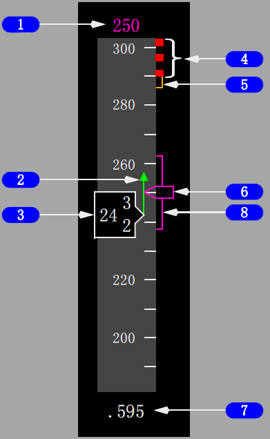
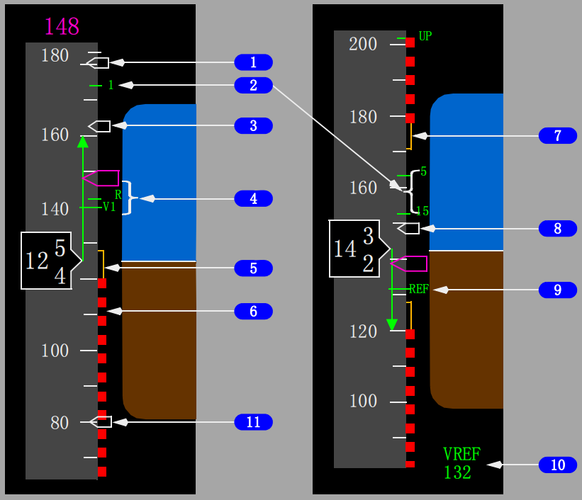
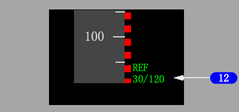
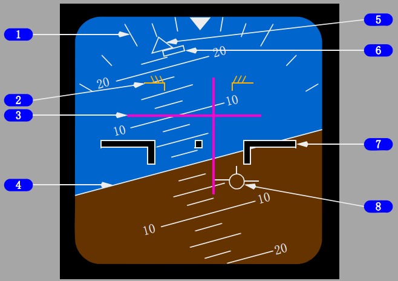
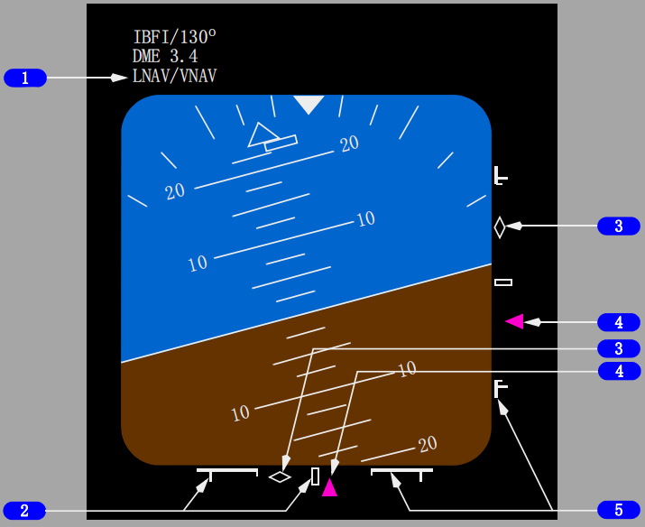
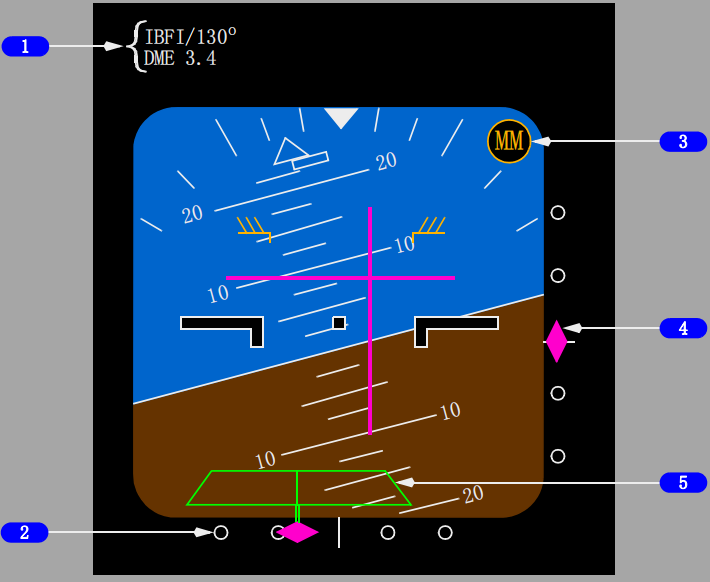
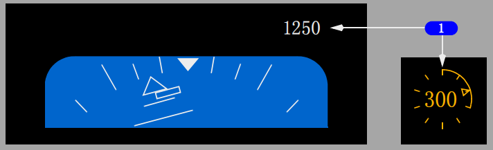
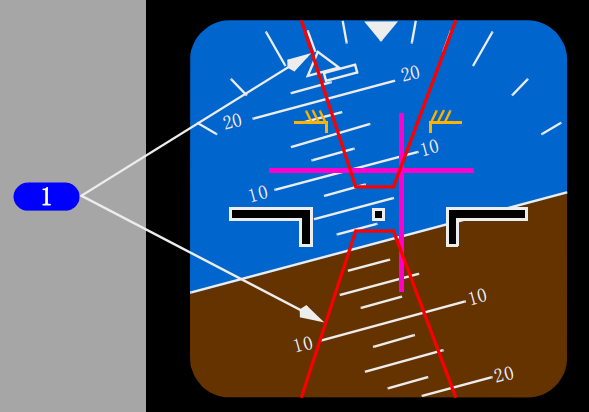
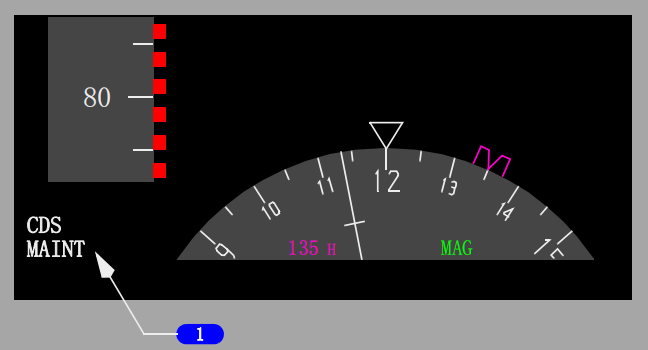
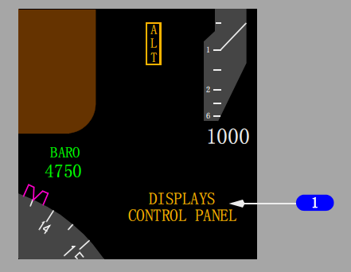

控制与指示:
返回面板
1 飞行方式信号牌
2 空速/马赫数指示
3 姿态指示
4 自动驾驶、飞行指引仪系统状态
5 高度指示
6 垂直速度指示
7 航向/航迹指示

1 选定的速度(洋红色)
显示目标空速:
• 指示IAS/MACH窗中人工选择的空速
• 当IAS/MACH窗空白时，指示FMC计算的空速。
2 速度趋势矢量(绿色)
箭头顶端指示根据当前空速和加速度预测的10秒钟后的空速。
3 当前空速(白色)
空速超过45节时，指示当前校准空速。
当前空速下降到最小机动速度的琥珀色带区域内时：
• 空速读数方框变成琥珀色并闪烁10秒钟
• 响起一次语音告警“Airspeed Low, Airspeed Low”(空速低)(选型)
• 当空速大于最小机动速度时，读数方框变回白色。
4 最大操作速度(红色和黑色)
色带的底部指示最大速度，该速度受限于下列速度中的最小值：
• Vmo/Mmo
• 起落架标牌速度
• 襟翼标牌速度。
5 最大机动速度/高速抖振(琥珀色)
当襟翼收上时，琥珀色带的底部指示最大机动速度。
这个速度提供了到高速抖振速度1.3g的机动能力（或者是在FMC维修页面设置的备用的经批准的机动能力）
当在高高度和全重相对较大的情况下操作时，也会显示这个弧线。
Note: 在带40度坡度角进行平飞时，会出现1.3g机动能力。
6 速度游标 (洋红色)
指向下列空速:
• 在IAS/MACH 窗内人工选择的空速
• 当IAS/MACH窗空白时，指示FMC计算的空速。
当选择的速度超出刻度范围，则游标停留在速度带的顶部或底部，只可见半个游标。
7 当前马赫数/地速(白色)
指示当前马赫数或地速:
• 当空速在0.40马赫或以上时，显示马赫数
• 当空速下降低于0.40马赫时，显示地速
• 当从马赫数过渡到地速或从地速过渡到马赫数时，一个带白框的数值将显示10秒。(选型)
8 VNAV速度带(洋红色)
在VNAV PTH下降中指示FMC目标空速。色带的底部指示自动油门提醒速度。
色带的顶部指示的速度表示:
VNAV将在此速度由VNAV PTH变为VNAV SPD。


1 游标5(白色)
如果发动机显示控制面板上的速度基准选择器在游标5或设定(SET)位置，
且选择了一个大于节的数值时，显示游标5。
如果速度基准选择器在自动(AUTO)位置，则不显示。
2 襟翼机动速度(绿色)
指示所显示的襟翼位置相对应的襟翼机动速度:
• 当在CDU中输入全重后或用速度基准选择器设定好起飞全重后显示
• 当显示与起飞相对应的V2+15游标时，不显示与当前襟翼设定相对应的襟翼机动速度游标，
除襟翼1起飞外
• 当襟翼手柄移至襟翼30或40时，标有数字的襟翼机动速度游标消失。
• 如果低于VREF+4，襟翼游标受抑制
• 高度在大约20,000英尺以上时，襟翼收上(UP)游标不显示。
3 V2+15(白色)
起飞时显示。
当发生以下任一种情况时消失:
• 第一次收襟翼时
• 当在CDU中输入VREF时。
4 起飞参考速度(绿色)
指示在CDU起飞参考(CDU TAKEOFF REF)页上选择的V1(决断速度)和VR(抬轮速度)
或用速度基准(SPD REF)选择器电门设定的V1和VR:
• 如果CDU上未选择V1和VR或不用速度基准选择器进行设置，则
在地面时，显示琥珀色的“NO VSPD”(无V速度)
• 起飞时，当速度大于80节时显示
• 离地时消失
• 当选择了V1速度且该数值不在刻度范围内时，
V1速度显示在空速指示的顶部
• V1通过语音音响自动报出。(选型)
5 最小机动速度(琥珀色)
起飞后第一次收襟翼或当输入一个有效的VREF值时，显示琥珀色带。
琥珀色带顶部指示最小机动速度。该空速提供：
• 低于约20,000英尺时，1.3g机动能力至抖杆。
• 高于约20,000英尺时，1.3g机动能力至低速抖振
(或在FMC维护页面中设置的备用经批准的机动能力)。
Note: 在带40度坡度角进行平飞时，会出现1.3g机动能力。
CAUTION: 当在琥珀色区域内以低于最小机动速度或高于最大机动速度操作时，机动能力降低。
在非正常情况下，目标速度可能低于最小机动速度。
6 最小速度(红色和黑色)
色带顶部指示出现抖杆时的速度。
7 最大机动速度/下一襟翼位置标牌速度(琥珀色)
起飞后不久可能会显示琥珀色弧线，直到空速超过160节或直到第一次收襟翼。
当襟翼未收上时，琥珀色弧线底部指示下一正常襟翼设置的标牌速度。
显示逻辑基于襟翼的正常设置顺序1, 5, 15, 30, 40。
当襟翼手柄移到进近
基准（APPROACH REF）页上所选的着陆襟翼设置或当襟翼手柄移到襟翼40时，这个弧线消失。
当任何襟翼收起时，它也会消失。
8 VREF+15/20(选型)(白色)
选择VREF后显示。
9 着陆基准速度(绿色)
指示在CDU进近基准（APPROACH REF）页上选择的REF(基准速度)，
或用发动机显示控制面板上的速度基准选择器设定的REF。
当选择REF速度但该数值不在刻度范围内时，REF速度显示在空速指示底部。
10 速度基准显示(绿色)
如果通过发动机显示控制面板上的速度基准选择器输入了空速和/或重量，显示:
• 在地面, 可以选择V1、VR和起飞全重；
如果选择VREF，则显示无效输入(INVAILID ENTRY)
• 在空中, 可以选择VREF和着陆全重；如果选择V1或VR，则显示
无效输入(INVAILID ENTRY)
• 当速度基准选择器调到SET位置时，显示消失。
11 80节空速游标(白色)
指示80节:(选型100节)
• 飞行前自动显示
• 在第一次收襟翼或输入VREF时消失。
12 襟翼/VREF速度指示(绿色)
指示选择的着陆襟翼位置和CDU进近基准页上选择的VREF:
• 襟翼15、30和40时显示
• 用速度基准选择器设定VREF时不显示。

1 坡度刻度(白色)
为坡度指针提供固定的基准；刻度标记为0、10、20、30、45和60度。
2 俯仰限制指示(琥珀色)
指示俯仰限制(在当前飞行条件下激活抖杆)。
• 襟翼未收上时显示。
• 襟翼收上低速时显示。
3 飞行指引仪(洋红色)
指示飞行指引仪操纵指令。。
4 地平线和俯仰刻度(白色)
指示相对于飞机标志的地平线；俯仰刻度增量为2.5度。
5 坡度指针
指示坡度角；
如果坡度角为35°或更大时，则指针显示实心并转为琥珀色。
• 指向机翼水平方向。
6 侧滑/打滑指示
在坡度指针下方移动，指示内侧滑或外侧滑：
• 在满刻度偏转时显示为实心白色
• 如果坡度角为35°或更大时，转为琥珀色；如果侧滑/打滑指示也在满刻度偏转，则显示为实心琥珀色。
7 飞机标志
指示相对于地平线的飞机姿态。
8 飞行航径矢量(FPV)指示(白色)
在EFIS控制面板上选择后，显示飞行航径角和偏流角：
• 显示相对于地平线的飞行航径角
• 显示相对于显示中心的偏流角。

1 刻度ID显示(白色)
• 在ADI的左上角处显示
• 指示每个刻度所显示的偏离源
• 当LNAV、VNAV、HDG SEL或TO/GA接通时显示
• 若当前的飞机位置在飞行计划航路横向1海里或2 x RNP之内时
显示 - 如果超出横向限制，则显示将超出导航性能刻度(NPS)
• 可能的指示包括:
• LNAV/VNAV - (LNAV和VNAV偏离)
• LOC/VNAV- (ILS航向道及VNAV偏离)
• FAC/VNAV – (IAN五边进近航道及VNAV偏离)(选型)
2 NPS偏离刻度
• 水平NPS偏离刻度表示当前FMC的水平RNP
• 垂直NPS偏离刻度表示当前FMC的垂直RNP
• 如果进近方式未接通且任一HDG SEL、TO/GA、LNAV，或当任何VNAV方式接通时，显示此偏离刻度。
3 预期偏离提示
• 如果正在接收有效的进近航道偏离信息，同时显示相应的NPS偏离刻度和指针，显示此标志
• 一个空心的白色菱形符号。
• 如果接通的水平方式随后过渡到LOC, 则水平NPS偏离指示将消失，并显示正常的ILS航向道指示。
• 如果接通的垂直方式随后过渡到G/S, 则垂直NPS偏离指示消失，并显示正常的ILS G/S指示。
4 NPS指针
• 当指针未停留在偏移限制时，会出现一个实心的洋红色符号
• 当指针位于偏移限制时，会出现一个空心的指针轮廓
• 指示相对于飞机的水平/垂直航径
• 如果在实际导航性能(ANP)指示条限制内偏离持续10秒，则指针会闪烁10秒。
5 实际导航性能(ANP)指示条
• 基于总系统误差，仍会存在有飞行技术误差的水平/垂直指示
• 水平ANP条在所有的飞行阶段都能显示
• 垂直ANP条仅在达到下降顶点后显示
• 由外圈刻度开始并按ANP相对于RNP的增长比例向内延伸。
• 当ANP等于RNP时，正好到达刻度中央
• 如果当前偏离在ANP条限制内持续10秒钟/5秒钟(选型)，则从白色变为琥珀色。

1 进近参考
显示选择的ILS频率或识别符、进近航道、ILS/DME/FMC距离和源信号。
显示选择的GLS识别符、通道、所选航道、GLS进近距离和源信号。
如果调谐的ILS频率不一致(超过1分钟)，则频率变成琥珀色并带有一条琥珀色横线，直至频率设定一致。
如果在MCP中输入的进近航道不一致(超过1分钟)，则航道变成琥珀色并且有一条琥珀色的横线穿过它。
2 航向道指针和偏差刻度
指针:
• 指示相对于飞机的航向道位置
• 当接收到航向道信号时，指针出现
• 当距中心2½点以内时，变成实心洋红色。
刻度:
• 指示偏离量
• 调谐航向道频率时，指针出现
• 当航向道接通且偏差略大于1/2点时，指针扩展。
在低无线电高度且自动驾驶接通时，刻度变为琥珀色且指针闪烁以指示航向道偏离量过大。
低于1000英尺AGL，在LNAV接通且LOC预位时，如果未截获航向道，则航向道刻度变为琥珀色且指针闪烁。
在1500英尺无线电高度，每个飞行员的偏离告警系统预位后即开始自检。
自检会在每个姿态指示器上产生2秒钟的LOC偏离告警显示。
3 信标台标志
当飞越其中一个信标台时，信标台标志闪烁（且可听见音响）:
OM(蓝绿色) - 外指点标(每秒两个长音)。
MM(琥珀色) - 中指点标(长短音交替出现)。
IM(白色) - 内指点标(只有短音)。
4 下滑道指针和偏离刻度
指针:
• 指示下滑道位置
• 当接收到下滑道信号时显现
• 当距中心2½点以内时，变成实心洋红色。
• 当航迹与方式控制面板上的向台航道相差超过90度(背航道)时，指针不显示。
刻度:
• 指示偏离量
• 调谐好航向道频率后可见。
在低无线电高度且自动驾驶接通时，刻度变为琥珀色且指针闪烁以指示下
滑道偏离量过大。
在1500英尺无线电高度，每个飞行员的偏离告警系统预位后即开始自检。
自检会在每个姿态指示器上产生2秒钟的LOC或G/S偏离告警显示。
5 上升的跑道(绿色，带有洋红色标杆)
出现下列情况时，显示:
• 航向道信号可用且指针可见。
• 航向道信号可用或已选择IAN进近且指针可见(选型)
• 无线电高度低于2500英尺。
当无线电高度低于200英尺时，向飞机标志上升。

1 无线电高度 - 环形刻度盘
低于2500英尺离地高度时显示：
• 2500至1000英尺离地高度时显示数字读数
• 下降到低于2500英尺时，外框呈白色高亮显示10秒钟
• 低于1000英尺离地高度时显示环形刻度(选型)
• 指针指示所选的无线电高度最小值(选型)
• 刻度的圆弧增加或减少，以指示飞机的无线电高度。 (选型)
• 当低于无线电高度最小值，剩余的环形刻度和指针变为琥珀色并闪3秒，数字读数不闪。(选型)

1 空中交通告警与防撞系统俯仰指令(红色)
红线以内的区域表示为解决交通冲突而需要避开的俯仰区域。
飞机标志必须在TCAS俯仰指令区域之外，以防止空中相撞。
参见下方系统说明相关内容。

1 显示系统信号牌
当电子显示组件(DEU)显示系统有故障时，会在主飞行显示左下角出现以下信号牌：
CDS MAINT（CDS维修）(白色) -
出现了可放行的通用显示系统(CDS)故障。
仅在地面起动第二台发动机之前显示。
CDS FAULT（CDS故障）(琥珀色) -
出现了不可放行的CDS故障。
仅在地面起动第二台发动机之前显示。
DSPLY SOURCE（显示源）(琥珀色) -
一个电子显示组件（DEU）失效。
十字指引 -
• 如果一个DEU在高于FL220时失效 -
• 自动驾驶和飞行指引仪不受影响
• 如果一个DEU在低于FL220的爬升或下降时失效，且失效一侧的自动驾驶接通 -
• 两个飞行员的飞行指引消失
• 在高度获得（ALT ACQ）时，飞行指引重现
• 自动驾驶接通在CWS P方式
• 自动驾驶失效一侧的LVL CHG、VNAV和V/S均不可用
• 如果一个DEU在低于FL220平飞时失效，且失效一侧的自动驾驶接通 -
• 只可能在CWS P方式下爬升或下降至一个新的高度
• 自动驾驶接通时，不可能在LVL CHG, VNAV 或 V/S方式下初始爬升或下降到新的MCP高度
• 自动驾驶接通或在爬升或下降时使用人工F/D方式，如果对侧的DEU失效 -
• 飞行指引仪俯仰指令杆从失效一侧的飞行员显示上消失，直到高度截获(ALT ACQ)
• 自动驾驶接通时，可以通过LVL CHG, VNAV 或 V/S方式爬升或下降
• 如果一个DEU在高于400英尺的进近方式下失效，且两个飞行指引仪接通 -
• 飞行指引从失效一侧的显示上消失
• 在接通第二套自动驾驶以进行双通道自动驾驶进近之前，如果一个DEU失效 -
• 接通第二套自动驾驶受抑制。

显示控制面板信号牌(琥珀色)
指示受影响一侧的EFIS控制面板失效。
当显示控制面板(DISPLAYS CONTROL PANEL)出现在显示屏的右下角时，高度信息消失。
当顶板上的控制面板(CONTROL PANEL)选择电门处于下列位置时:
• BOTH ON 1 -
机长和副驾驶的CDS显示和气压由左侧EFIS面板控制
• NORMAL -
左侧EFIS面板控制机长的CDS显示和气压，右侧EFIS面板控制副驾驶的CDS显示和气压
• BOTH ON 2 -
机长和副驾驶的CDS均显示,气压由右侧EFIS面板控制。
空速不一致告警(琥珀色)
指示机长和副驾驶空速指示相差超过5海里/小时并持续5秒钟。
高度不一致告戒(琥珀色)
指示机长和副驾驶高度指示相差超过200英尺并持续5秒钟以上。
AOA不一致告警(琥珀色)
指示机长(左) 和副驾驶 (右)的迎角值相差大于10度连续10秒以上。
其余内容太多,略..